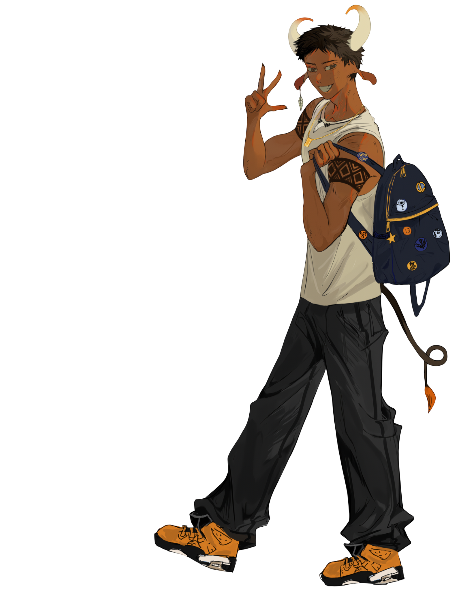

- A voz do Purus
OPENUTAU / PORTUGUÊS BRASILEIRO
IDENTIDADE AMAZONENSE. EXPRESSÃO SEM FRONTEIRAS.
Tecnologia, voz
e identidade.
O Kukui é um banco de voz desenvolvido para o sintetizador OpenUtau, projetado para oferecer uma voz clara, natural e expressiva. Com foco no canto em Português Brasileiro, o projeto busca proporcionar melhor adaptação ao idioma, priorizando pronúncia consistente, fluidez e qualidade sonora.
Mais do que um voicebank, o Kukui é uma iniciativa dedicada a fortalecer a presença da cultura Amazonense no universo UTAU, apresentando um personagem de raízes Apurinã. O projeto valoriza identidade, representatividade e regionalidade, unindo tecnologia e tradição em uma proposta que vai além da música: é também uma forma de expressão cultural e preservação simbólica.

ARTE / ELFTHONNYBancos de voz.
Conheça os modos vocais, ouça as demonstrações e consulte as informações de cada banco.
CVC Mini Boi e VCCV Boi, Purus & Galeroso constam no catálogo oficial. CVVC e DS têm materiais neste projeto; informações e distribuição ainda não constam no site de referência.
Termos de uso.
Ao utilizar o banco de vozes Kukui, você aceita e compromete-se a seguir os termos de uso.
{{term.title}}
{{term.body}}